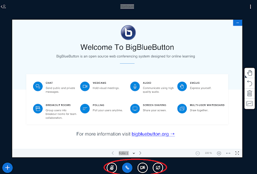
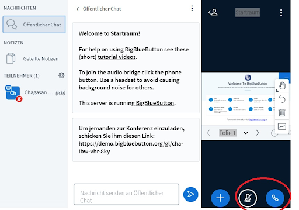
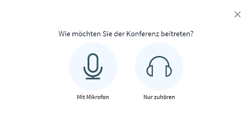
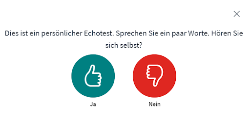
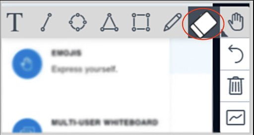
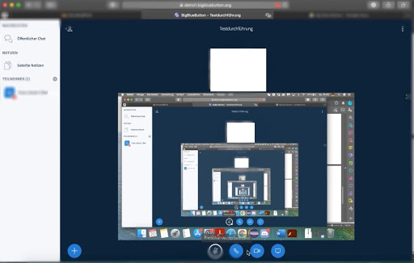

Remote-Usability-Studie für BigBlueButton
Verbesserungsvorschläge
Vergleich BBB mit anderen Webkonferenz Dienste
Die Mehrheit von Probanden
findet, dass andere Webkonferenzdienste deutlich mehr Funktionen bieten. Zoom ist
definitiv die verbreitete Alternative, die sie kennen. Die Probanden
finden Zoom praktischer als BBB, weil die Fenster klarer strukturiert sind und
weil es dort bessere und ausreichende Funktionen zu finden sind. Andere haben
BBB mit Zoom gleichgestellt, da es vom Aufbau her nahezu äquivalent sind. Die
Probanden könnten sich vorstellen, BBB in gleicherweise zu benutzen wie Zoom.
Zudem wäre Discord auch eine
Alternative, jedoch wäre es nicht mit BBB vergleichbar, da eine andere
Zielgruppe angesprochen wird. Dieses Tool bietet sehr viele Zusatzfunktionen.
Es ist intuitiver und die Nutzer können besser damit umgehen. Andere Teilnehmer
finden, dass Microsoft Teams deutlich mehr Funktionen bietet z.B. Emojis im Chat oder
das Reagieren auf Nachrichten auf Emojis. Gerade Home-Office Mitarbeitern finden die Hintergrundeffekte nützlich. Auch die Audioqualität
ist bei anderen Diensten besser.
Wenige Probanden finden BBB
angenehmer als Zoom, da sie Zoom persönlich nicht als Favoriten ansehen.
Verbesserungsvorschläge
Die Probanden wünschen sich nur visuelle Meldungen beim Stummschalten, um den Störfaktor beim
Zuhören zu reduzieren. Das Symbol soll z.B. nur durchgestrichen oder grau unterlegt werden werden.
Das Layout sollte überarbeitet werden. D.h. die Aufteilung der einzelnen Funktionen sollte
umgestaltet werden, sodass alle Funktionen thematisch sortiert sind und die
Nutzer innerhalb dieser Themengruppe alle Funktionen dazu finden. Außerdem
sollte die Skalierung der Website verbessert werden, da bei der Fensterskalierung
das Kamerasymbol weder als Icon noch in einem Untermenü sichtbar ist. Das darf
bei einer Kernfunktion nicht geschehen. (siehe Abb. 1 und 2)
Die Nutzer wünschen sich zusätzliche Funktion, unter anderem das Teilen von PDF-Dateien im öffentlichen Chat
und das Hinzufügen von Emojis. Des Weiteren empfehlen die
Probanden das Hinzufügen eines Radierers als Werkzeug, damit die Zeichnungen auch wegradiert
werden können. Die Funktion “Rückgängig” ist für die Teilnehmer nicht ausreichend, da man
viele Schritte zurückgehen müsse, was wiederum zeitaufwenig sein könnte.(siehe Abb. 3)
Es empfiehlt sich die Audioqualität zu verbessern.
Die Teilnehmer finden den Echotest überflüssig und zeitaufwendig. Daher kann man auf diese
Funktion verzichten. Die Auswahl zwischen Teilnahme “mit Mikrofon” oder “nur Zuhören” sollte
verbessert werden. Und zwar sollten die Teilnehmer in der Lage
sein auch an späteren Zeitpunkten die Einstellung zu ändern, ohne das Meeting zu verlassen.
(siehe Abb. 4)
Die Funktion Bildschirmübertragung kann man verbessern, indem man die Auswahl von beliebiger
Anzahl von Fenstern ermöglicht. Auch die Fehler bei der Fensterauswahl sollten behoben
werden. (siehe Abb. 4)
Optional sollte eine Bildschirmfreigabe über einem Tablet
funktionieren. Außerdem sollte es möglich sein mehrere Präsentationen gleichzeitig
auszuführen und hochzuladen.
Weiterhin sind Hintergrundeffekte und andere Funktionen für den Online Unterricht erwünscht,
wie z.B. das Hochladen von Dateien über dem Chat.
Zudem scheint die Whiteboard Funktion eher irrelevant zu sein, da man z.B. als Übungsleiter
über Zoom direkt auf dem Tablet mit einer Bildschirmübertragung diverse Änderungen vornehmen
kann. (siehe Abb. 5)
| Abbildung 1: Vollbild ein | Abbildung 2: Vollbild aus |
|  |  |
| Abbildung 4 Echotest | |
|  |  |
| Abbildung 3 Das Hinzufügen des Radierers als zusätzliches Werkzeug | Abbildung 5 Endlosschleife bei der Bildschirmübertragung |
|  |  |